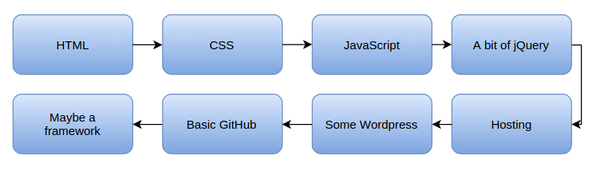

the link of articles
When people try to learn JavaScript, or any coding skill really, they often run into the same challenges:
Some concepts can be confusing, especially if you’re coming from another language.
It’s hard to find the time (and sometimes the motivation) to learn.
Once you’ve understood something, it’s all too easy to forget it again.
The tooling landscape is so vast and constantly changing that it’s difficult to know where to begin.
Fortunately, these challenges can be recognized and ultimately conquered. In this article, I’m going to present six mind tricks which will help you learn JavaScript faster and become a happier, more productive coder.
1. Don’t Let Future Decisions Stop You from Progressing Now
For many people learning JavaScript, one of the first questions they ask is which framework to use (and let’s be fair, there’s a lot). But if you haven’t gotten comfortable with raw JavaScript, this is the wrong question to be asking. You’ll spend all of your time researching different frameworks and none of your time actually moving forwards.
One way to help get out of the indecision trap is to have a road map for what you need to learn. For example, to become a front-end developer, your road map might look like this:

Road map to become a front-end developer: HTML, CSS, JavaScript, jQuery, Hosting, WordPress, GitHub, Framework.
Breaking it down further, you can make a functional web page with just HTML and CSS. Seeing the individual steps laid out like this, it becomes easier to see what to focus on now so you don’t waste time worrying about things that should come later.
For those who would find it helpful, I’ve written a more detailed learning road map for becoming a front-end developer.
2. Don’t Let Confidence Trick You into Forgetting Things
Understanding a concept quickly can be one of the most damaging things to your progress in learning JavaScript. Allow me to explain.
When you read something and it makes sense, it can be tempting to move on to the next thing immediately. Maybe you’ll understand the next thing and then move on again. But soon, you’ll arrive at a point where you realize you’ve forgotten some of the previous things you’ve learned, so you need to go back. You give the previous concepts a quick glance to refresh your memory and then move on again. But now you’ve forgotten something else. You keep repeating this back-and-forth dance until you get to a point where you realize you’re completely lost. You get discouraged, take a break, and then when you try to come back, you’ve forgotten everything.
Fortunately there’s a simple two-step cure for this problem:
Limit the amount of stuff you learn at one time.
Practice for real — actually write code.
When you learn a new concept, make sure to try it out, play with it, get comfortable with it, and even combine it with other concepts. It’s so important to actually type out the code in any examples you are following, because that’s what helps you absorb it. Also, limiting the amount you learn at one time will help you retain the material, for the simple reason that it’s easier to remember fewer things.
This process feels like it takes longer than just reading through things and moving quickly, but it actually takes much less time because you won’t need to backtrack as much. I learned this the hard way on several occasions.
3. Approach Practice with the Right Mindset
Many people see practice as something boring and repetitive, so they’ll often skip it or try to take shortcuts. If you try to shortcut your JavaScript practice, you’ll actually end up taking longer to learn it. But how do you make practice more exciting so you’ll actually do it?
Try this mindset shift:
What if you learned a new JavaScript concept and you weren’t allowed to try it? How would you feel? Personally I’d be kind of annoyed, especially after taking the time to understand it. It would be like a kid getting a new toy and not being allowed to play with it.
When you learn something new in JavaScript, try treating it like a new toy, a new car, a new pair of shoes, or whatever it is that you’d have fun trying out. Then don’t practice like you’re working, practice like you’re playing. Do something cool with your new skills. Surprise yourself. Show your friends.
With a more playful mindset, you’ll learn much faster, you’ll remember stuff longer, and you’ll have more fun.
4. Find Time to Code Using the Facebook Trick
One of the most common problems people have is that they can’t find the time to code. Often, the same people will spend hours on sites like Facebook, YouTube, Wikipedia, or Reddit. Whether or not this describes you, there are still lessons to be learned here.
I’ve definitely had times when I only meant to look at Facebook for a while, but I ended up staying on there for hours. How does that happen? It happens precisely because I didn’t intend to go on there for long. Getting started on something is the hardest part, so by keeping the initial commitment small, I find it much easier to jump in. If someone had asked me if I was prepared to spend hours on Facebook, I’d say no because I don’t have that kind of time. However, I’m much more receptive to the idea of just checking one thing quickly, and that’s how I get sucked in.
The good news is that you can use this same psychology to your advantage when learning to code. Don’t try to commit to several hours of coding because then you’ll never find the time. Just tell yourself you’re going to try some code for three minutes. You’ll never struggle to find time again.
5. Think Slower and You’ll Learn Faster
This one sounds counterintuitive, so I’ll explain it with a story.
A friend of mine was once confused about a certain feature of JavaScript. I asked him to walk me through what he knew and then explain which part was confusing. As he went through the piece of code, I noticed that he was rushing.
“Hold on!” I said. “Slow down, and walk me through each step of this.”
My friend proceeded to give me an overall summary of what was happening in the code.
I stopped him again. “You’re still rushing. Try again, but this time, I want you to literally go through each line of this and tell me what exactly is happening in each line.”
This time, my friend was better able to explain what was going on in the code. The key was that he had taken the time to step through each piece of it instead of trying to understand all of it at once.
In cases like this, thinking slower actually makes you learn faster.
6. Write Complex Code in Plain Language First
If a piece of code is going to be complicated or unfamiliar, write it out in plain language first. That way, you can figure out what you want the code to do before you actually have to write it. Here are two benefits to this approach:
Your code will be easier and faster to write because you won’t have to constantly stop and think about how you want it to behave.
You’ll catch bugs before they happen because you’ll have a clearer idea of what the code should do.
Conclusion
More from this author
5 Responsive Design Pitfalls and How to Avoid Them
Build a Countdown Timer in Just 18 Lines of JavaScript
We’ve gone over a bunch of ways to learn JavaScript faster, but you can apply many of these tips to other skills. Here’s a recap of what we’ve covered:
Stop worrying about future decisions and dive in.
Make practice fun by treating new skills like toys.
Find time to code by only making tiny commitments the way you would with sites like Facebook, YouTube, or Wikipedia.
Slow down, take smaller steps, and you’ll learn faster.
So how do you approach learning? Do you have any tips or tricks I didn’t cover here? Or maybe you think it’s all baloney and the only way forward is to put in twelve hours a day. Either way, I’d love to hear from you in the comments.
comments---------
Paweł Grzybek • 2 months ago
Nice one! I like the most Facebook advice. Probably that is the most helpful advice to learn anything not only JavaScript. Not only learn, but also do stuff :) Good article!
3 • Reply•Share ›
Avatar
Yaphi Berhanu Paweł Grzybek • 2 months ago
Thanks! Part of my hope was that this article would be useful for learning other things too, so I'm glad to hear that.
• Reply•Share ›
Avatar
Jef Mari • 2 months ago
Good Tricks! Especially with the Facebook advice. Sometimes it takes me time to realize that i only want to check my news feed very very quickly but ended up Surfing hours >.<. Anyways, The Fifth advice will for me, base on my experince, the key to learn fast and success. :D Great Article!
2 • Reply•Share ›
Avatar
Yaphi Berhanu Jef Mari • 2 months ago
I'm glad that one is useful.
• Reply•Share ›
Avatar
bialikover • a month ago
I like the way you recap at the end! This is very convenient... I think we now live in a different time when the streams of information are so high... so we end up jumping back and forth to get the answer at the moment... something like the google effect, we want information right away, but the truth is, that most of the times we don't take time to confirm the sources or the facts.
Good article.
1 • Reply•Share ›
Avatar
Yaphi Berhanu bialikover • a month ago
Thanks!
• Reply•Share ›
Avatar
Ess3 • 2 months ago
Very useful advices to follow....not only for java script but in every case
1 • Reply•Share ›
Avatar
Yaphi Berhanu Ess3 • 2 months ago
Thanks!
• Reply•Share ›
Avatar
Philipp • 2 months ago
Very nice!
1 • Reply•Share ›
Avatar
Yaphi Berhanu Philipp • 2 months ago
Thanks!
• Reply•Share ›
Avatar
Lily Sahiful Bahari • 2 months ago
Thank you so much for the very helpful suggestions! Roadmap is very helpful. My problem is that I jumped straight into framework (Meteor) without having basic fundamentals and ways to apply them to solve problems. With the updated ecosystem in the framework, I am having greater trouble..My work got stuck..Because I don't know Javascript, database manipulation. I feel like I should follow this roadmap and your suggestions before thinking fast about jumping into future new technologies.. :(
1 • Reply•Share ›
Avatar
Yaphi Berhanu Lily Sahiful Bahari • 2 months ago
You're very welcome! It can be tempting to jump into a framework first, especially one as good as Meteor, so I know what that's like.
• Reply•Share ›
Avatar
Kevin • 2 months ago
Very good article! I'll incorporate these suggestions into how I learn a new framework or technology from now on!
1 • Reply•Share ›
Avatar
Yaphi Berhanu Kevin • 2 months ago
Thanks! Glad I could help.
• Reply•Share ›
Avatar
Sheryl Schmalz • 2 months ago
Great article. Very usable tips. Appreciate the flow chart. One step at a time
1 • Reply•Share ›
Avatar
Yaphi Berhanu Sheryl Schmalz • 2 months ago
Glad the article helped.
• Reply•Share ›
Avatar
Carlton Stith • 2 months ago
Great list of tips! I especially like number 6. Write complex concepts in plain English first. I used this to learn other things (medicine, anatomy,etc) so I don't see why it wouldn't work with learning JavaScript. Thanks
1 • Reply•Share ›
Avatar
vanwilson Carlton Stith • a month ago
Tip number 6 is vital. You used to hear about it a lot as a technique known as writing in "pseudo-code" (e.g., found this old page by searching, http://www.slideshare.net/Dami....
It's a skill worth reviving.
• Reply•Share ›
Avatar
Yaphi Berhanu Carlton Stith • 2 months ago
Thanks! Writing stuff out always helps.
• Reply•Share ›
Avatar
Husain Ahmmed • 2 months ago
Thanks for this awesome tips
1 • Reply•Share ›
Avatar
Yaphi Berhanu Husain Ahmmed • 2 months ago
Thanks for the awesome comment!
• Reply•Share ›
Avatar
Person Person • 2 months ago
I like following books and tutorials but I find a lot of them frustrating. Many times they iterate through several approaches, refining the code with each step. They're trying to demonstrate that sometimes you experiment before arriving at the best solution, but I spend a lot of time bogged down, trying to work through the initial approaches, which are usually unintuitive, only to be told there is a better way in the next section. I'd rather not clutter my mind with the bad approaches. So I read the examples but I don't try them until they get to the last ones in the chapter.
What I really dislike is when they talk about a concept they covered in a chapter I skipped because I'm not interested in drawing a map (or whatever) but I have to go back and read it to understand the later, unrelated chapter.
1 • Reply•Share ›
Avatar
Antonella Person Person • 2 months ago
In well-written books, this process consists not in writing bad code and rectifying it in later chapters. Rather, it might consist in writing simpler bits of code that incorporate the knowledge gained up to that point. What happens in later chapters is that the initial code is refactored, that is, it's made leaner and more concise, on the basis of the newly acquired knowledge that piece of code is designed to exemplify.
1 • Reply•Share ›
Avatar
Yaphi Berhanu Person Person • 2 months ago
"I'd rather not clutter my mind with the bad approaches."
I agree with this so much.
• Reply•Share ›
Avatar
Steve Scott • 2 months ago
Brilliant. Just brilliant. I love these types of articles that pick up on a mindset and offer suggestions on how to change it in subtle ways. Especially JavaScript.
1 • Reply•Share ›
Avatar
Yaphi Berhanu Steve Scott • 2 months ago
Glad you enjoyed it!
• Reply•Share ›
Avatar
Samiullah Khan • 2 months ago
My biggest problem while learning Javascript is whatever causes us to implement the Second Trcik because now I found the true reason why I forgot JavaScript after giving all of my time, effort and motivation.
1 • Reply•Share ›
Avatar
Yaphi Berhanu Samiullah Khan • 2 months ago
I know what you mean. The second one has gotten me so many times too.
1 • Reply•Share ›
Avatar
Samiullah Khan Yaphi Berhanu • 2 months ago
I really like the first one too, because I had to trick myself here as I never realized that for someone getting into JavaScript he will detour if he start thinking about AngularJS or Node. So start and empower yourself with raw JavaScript as all those frameworks are nothing but Plain JavaScript
• Reply•Share ›
Avatar
Dinar Frescø • a month ago
In fact, this simple truth, which is so easy to forget during training, but they must be recorded on the sticker and stick to your desk and watch every time.